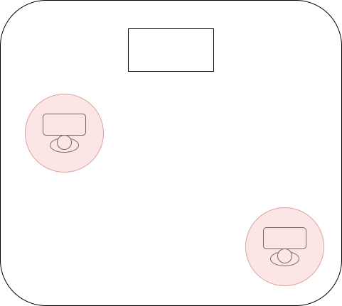
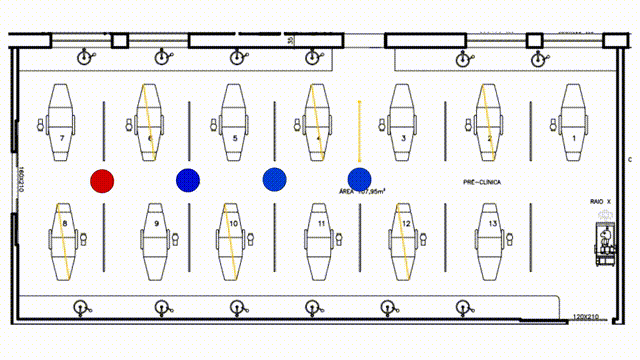

Proposta de construção de um protocolo de biossegurança norteado pelo modelo de Wells-Rley¶
Introdução¶
O cenário atual de pandemia vem demandando adequação de espaços de uso coletivo para manutenção da segurança dos ocupantes, algo distante de ser trivial devido à necessidade de cômputo de diversas variáveis como número de ocupantes, tempo de exposição, condições de ventilação, atividade dos ocupantes (que influencia quanto exalam e inspiram eventuais contaminantes) para se obter respostas sobre as condições de segurança dos ambientes.
O que se propõe é a revisão do protocolo de biossegurança atual baseado essencialmente num paradigma de que existem sítios no entorno de indivíduos capazes de delimitar o risco de contágio como na imagem esquemática abaixo.

No entanto as condições reais de transmissão da doença se aproximam mais à imagem abaixo, onde cada indivíduo é um ponto gerador e consumidor de particulas altamente dinâmicas capazes saturar ambientes, preencher espaços, transpor distâncias e também capazes de tornar o que, à vista do protocolo atual, seria um ambiente seguro com apenas poucos indivíduos em ambientes com elevado risco de contágio.

A principal deficiência do protocolo atual é a falta de trato quantitativo para as principais variáveis determinantes da dispersão da COVID19 como as citadas no início do texto, por isso propõe-se a substituição do seu paradigma por outro baseado no modelo de Wells-Riley.
Este texto se propõe a apresentar os motivos para substituição do modelo atual de protocolo de biossegurança para o um modelo que se baseia na equação de Wells-Riley, que relaciona tempo de exposição, atividades realizadas pelos indivíduos e medidas sanitizantes com o o risco de uma novo contágio.
Desta forma será possível construir uma abordagem quantitativa validada, simplificada e estruturada para analisar os aspectos referentes à biossegurança nos ambientes da universidade. Transpondo as limitações dos protocolos baseados na concepção de que a transmissão predominante do SARS-CoV-2 se dá por partículas balísticas e superfícies, que tem como principal medida o distanciamento social.
Os protocolos fundamentados no distanciamento social não são instrumentados para prover respostas para questões como:
- Qual influência do tipo de máscaras sobre o risco dos ambientes? As máscaras de tecido são suficientes para o ambiente X ou é necessário uma máscara N95/N99? Do ponto de vista financeiro, qual a relação de retorno sobre investimento de cada tipo de máscara?
- Qual a influência do uso de equipamentos purificadores de ar em ambientes com baixa renovação e/ou dotados de condicionadores de ar unitários (AC split e AC de janela)? Um ambiente quente pode funcionar climatizado se possuir purificadores? E quanto aos ambientes com janelas inexistentes ou fixas?
- Qual a influência do tempo de permanência sobre o risco de contaminação? Qual a diferença de segurança entre atividades de 4h de duração para atividades de 3h, 2h, 1h e 15min?
- Como viabilizar atividades que em sua essência demandam contatos mais próximos do que o preconizado pelo distanciamento social? Como atendimentos odontológicos, médicos e tantos outros que demandam contato físico entre pessoas?
- Como viabilizar atividades que envolvem movimentação de pessoas entre diversos postos de trabalho e ambientes, como atividades administrativas?
- Como viabilizar atividades em ambientes que possuem infraestrutura diferente de uma sala de aula, como laboratórios de bancadas fixas ou que de alguma forma não permitam a reorganização dos postos?
Devido ao fato destas questões importantes e tantas outras incidirem sobre uma zona cinzenta de aplicação do protocolo atual têm-se a aplicação subjetiva de critérios diversos para suprir as lacunas, o que não é uma boa prática para estas situações. A incorporação do modelo de Wells-Riley no cerno do protocolo de biossegurança trará o benefício de um instrumento de análise mais completo e responsivo às demandas da universidade.
Nesta proposta de revisão do protocolo atual serão apresentados os seguintes tópicos:
- Apresentação de Wells-Riley - Contém uma apresentação sucinta da equação básica do modelo de Wells-Riley
- Máscaras e Ventilação - Um exemplo de aplicação do modelo de Wells-Riley, em que é analisado o efeito da ventilação/filtragem comparado com diversas máscaras nas mesmas condições
- Aplicação comparativa do modelo de Wells-Riley e distanciamento social a ambientes da UFJF-GV - Nesta seção é feita a aplicação do protocolo em ambientes da UFJF-GV para discutir sua forma de aplicação e diferenças para o protocolo atual
- Conclusão - Um apanhado dos conteúdos apresentados
Apresentação da equação de Wells-Riley¶
A equação de Wells-Riley é um modelo epidemiológico que captura uma série de fatores relacionados à transmissão de doenças por via aérea num formato simples que pode ser facilmente processado em planilhas e até mesmo em calculadoras científicas. Apesar da simplicidade, este modelo faz parte da formulação de modelagens da transmissão da COVID19 desenvolvidas pelo MIT e CERN (os links apresentados são de calculadoras avançadas que valem a pena ser conhecidas).
\(P = 1 - {\rm e}^{(-Iqpt/Q)}\)
Em que, \(P(\%)\) representa a chance de contaminação em função do número de indivíduos contaminados (infectores) \(I(un)\), do total de contaminantes exalado pelos infectores \(q(h^-1)\), pela atividade respiratória dos indivíduos expostos à contaminação (susceptíveis) \(p(m³/h)\), pela passagem do tempo \(t(h)\) e finalmente \(Q(m^3/h)\) a taxa de remoção de contaminantes. Sendo possível, a partir da seguinte equivalência estabelecer o total de novos casos esperados, onde \(C\) é o número esperado de novos casos e \(S\) o total de indivíduos susceptíveis:
\(P = \frac{C}{S}\)
Trata-se de um modelo extensamente utilizado desde sua introdução em 1978 até os dias de hoje, sendo também validado e expansível (permite inclusão de novos fatores para aprimorar o tratamento dos cenários), como pode ser visto a seguir:
- \(Q\), pode incorporar o somatório de todos os elementos que reduzem a concentração de contaminante no ar, como \(\alpha_{vent}\) que é o fluxo de ar proveniente de um sistema de ventilação, \(\alpha_{natural}\), fluxo da ventilação natural, \(\alpha_{filtro}\) fluxo de ar fitrado (conhecido como CADR) de filtros purificadores de ar. Há a possibilidade de incorporar o efeito de lâmpadas UVC em sistemas denominados Upper room que apesar de não atuar pela inserção/passagem de ar, são capazes de neutralizar contaminantes numa taxa volumétrica conhecida.
\(Q = \alpha_{vent} + \alpha_{natural} + \alpha_{filtro}\)
-
\(q\), que representa o quanta viral exalado pelo infector pode incorporar o impacto filtrante da presença de diversos tipos de máscara com um fator atenuador \((1 - \eta_I)\), onde \(\eta_I\) representa a eficiência de filtragem das máscaras dos utilizadas pelos infectores
-
\(p\), que representa a atividade respiratória dos indivíduos susceptíveis pode incorporar o impacto filtrante da presença de diversos tipos de máscara com um fator atenuador \((1 - \eta_p)\), onde \(\eta_p\) representa a eficiência de filtragem das máscaras dos utilizadas pelos susceptíveis
Essas pequenas alterações são capazes de criar um mecanismo para aferir o impacto de máscaras e diversas formas de tratamento do ar como pode ser visto abaixo. É possível estimar até mesmo o impacto teórico de investimentos diversos (como será apresentado no tópico Máscaras vs ventilação)
\(P = 1 - {\rm e}({\frac{-Iqpt(1 - \eta_I)(1 - \eta_p)}{\alpha_{vent} + \alpha_{natural} + \alpha_{filtro}}})\)
Apesar dos benefícios apresentados, o modelo de Wells-Riley faz uma série de simplificações para conseguir se manter simples, como:
- O modelo não faz nenhuma consideração sobre a dinâmica de contaminação por superfícies ou gotículas maiores/partículas balísticas.
- O ar no interior de cada ambiente é homogêneo, isto é, quando qualquer quantidade de contaminante é exalada, o montante instantaneamente é distribuído por todo o ar
- A infecção ocorre sempre quando um certo limiar de contaminante é aspirado
- Infectores exalam contaminantes em doses constantes durante o período de permanência/interação nos ambientes
Conforme outros parâmetros, como o decaimento do vírus, dimensão terminal das partículas de aerossol em função das condições ambientais, outras simplificações precisam ser feitas. A complexidade da dinâmica dos fluidos (ar e aerossol) que raras vezes se comporta de forma homogênea como é considerado no modelo e deve-se ter em mente a máxima da modelagem "essencialmente, todos os modelos estão errados, mas alguns são úteis", portanto, deve-se evitar interpretações determinísticas da realidade a partir de um modelo simplificado. Apesar disso, o modelo oferece uma evolução substancial em relação ao patamar atual de compreensão da dinâmica das variáveis mais importantes dos ambientes (físicas e comportamentais) em relação à COVID19.
Máscaras e ventilação¶
Este tópico foi elaborado com o intuito de apresentar uma visão comparativa dos resultados possíveis ao incorporar medidas mitigadoras do risco de contaminação, que são máscaras e ventilação. Será demonstrado, a partir do modelo de Wells-Riley, como cada medida impacta no risco de contaminação e uma breve discussão de valores.
É importante destacar que nenhuma medida deve ser excluída dos planos de adequação, pois não se trata de uma oposição entre máscaras e ventilação/filtragem, estas medidas tem efeito cumulativo quando utilizadas em conjunto. O intuito é apresentar uma aplicação do modelo Wells-Riley para auxílio na racionalização do uso de recursos em função da situação financeira delicada da universidade.
Custo dos insumos¶
Estes são os custos levantados na data atual dos seguintes itens:
| Item | Valor (R$/un) | Filtragem |
|---|---|---|
| Purificador com filtro Hepa H13/H14. Vazão 500 m³/h.* | 4.800,00 | 500 m³/h |
| Máscara PFF2/N95 ** | 5,00 | 95% |
| Máscara cirúrgica ** | 0,70 | 80% |
| Máscara de tecido convencional ** | 4,00 | 50% |
| * Item cotado em jun/2021; ** Valores obtidos em consulta simples na internet |
Comparação da redução do risco de contaminação após diversas medidas¶
Foi feita uma análise para um ambiente hipotético para ilustrar o efeito de diferentes medidas mitigadoras com algumas variações que eventualmente suscitam dúvidas e também do tempo, conforme lista abaixo:
- Nenhuma medida adotada, todos os indivíduos sem máscara
- Todos os indivíduos utilizando N95
- Somente os indivíduos susceptíveis utilizando N95
- Todos os indivíduos utilizando máscara cirúrgica
- Somente os indivíduos susceptíveis utilizando máscara cirúrgica
- Inclusão de purificador com filtro HEPA realizando UMA troca completa do ar por hora
- Inclusão de purificador com filtro HEPA realizando SEIS trocas completas do ar por hora
- Inclusão de purificador com filtro HEPA realizando DOZE trocas completas do ar por hora
O resultado das simulações podem ser vistas na imagem abaixo:

Como já citado, isso é apenas um ambiente hipotético e a intenção é subsidiar a discussão sobre o impacto das medidas possíveis. Para tanto foram destacados os efeitos da utilização de N95 por todos os indivíduos e a utilização de purificadores capazes de realizar 12 trocas de ar completas por hora.
Percebe-se um efeito mitigador de risco mais substancial das máscaras N95 utilizadas por ambos do que qualquer outra medida. Abaixo consta um detalhamento em relação ao momento \(t = 3h\) para ilustrar a diferença do impacto de cada medida.

Sem nenhuma medida, este ambiente hipotético ofereceria 63.21% de risco de contaminação aos indivíduos nele presentes após 3h de permanência. A utilização de máscaras N95 por todos os indivíduos reduziria para 0.25% o risco de contaminação, e a adoção de purificadores com filtros HEPA realizando 12 filtragens completas durante essas 3h reduziria o risco de contaminação para 7.4%.
Pode-se perceber uma diferença muito significativa entre a não-adoção de medidas mitigadoras e a adoção de medidas básicas no risco de contágio. O mesmo ocorre com a máscara cirúrgica utilizada por ambos com redução do risco para 3.92% ou para quando somente os indivíduos não contaminados utilizam a máscara (útil para avaliar o contexto de atendimento em saúde, onde os pacientes podem estar contaminados) obtendo redução da chance de contaminação para 4.88% e 18.13% com máscaras N95 e cirúrgicas respectivamente.
A presença de purificadores tem efeito teórico idêntico à ventilação e sua inclusão em detrimento da ventilação (natural e mecânica) em si foi devido à limitação de implementação de ventilação em diversos ambientes que foram concebidos de forma pouco atenta a este quesito. Nestes casos, seja pelo aumento da carga térmica ou por restrições estruturais do espaço, a inclusão de ventilação é muito onerosa. Em contrapartida, o purificador é distribuído normalmente em formato portátil e com baixo consumo, sendo facilmente integrado ao ambiente e à infraestrutura elétrica.
Feito o esclarecimento sobre a presença do purificador, nota-se que sua influência sobre os riscos de contaminação tem uma magnitude menor do que as máscaras considerando até 12 trocas/passagens por hora (que é o valor preconizado pela OMS em ambientes de saúde com intensa geração de aerossol na presente data). Na imagem abaixo está a redução relativa percentual de risco de cada uma das medidas para o mesmo período no tempo \(t = 3h\).

A redução percentual do risco devido à utilização por todos os presentes de máscaras N95 foi de 99.52%, enquanto do purificador com filtro HEPA foi de 85.97%.
Essa diferença é derivada da influência de cada um dos dois elementos. Enquanto os purificadores (assim como a ventilação de forma geral) atua sobre o ambiente com um efeito de razão \(1/Q\), as máscaras tem uma influência quadrática quando todos os indivíduos as utilizam \((1 - \eta_I)(1 - \eta_p)\), que no caso das eficiências de filtragem serem as mesmas, se transformam em \((1 - \eta_{geral})^2\).
Para ilustrar melhor, veja o impacto de algumas medidas na presença de contaminantes no ambiente (não confundir com o risco de contaminação, porque isso depende também do tempo de exposição):
- Se todos utilizam máscara de tecido com 50% de eficiência (algo que a maior parte das máscaras consegue se estiver bem ajustada) há uma redução de 75% do total de contaminantes no ambiente
- Se todos utilizam máscara cirúrgica com 80% de eficiência há uma redução de 96%
- Se todos utilizam máscara N95 com 95% de eficiência há uma redução de 99,75%
- Se a ventilação ou filtragem do ar aumenta de 1 para 6 trocas/filtragens de ar por hora há uma redução de 83%
- Se a ventilação ou filtragem do ar aumenta de 1 para 12 trocas/filtragens de ar por hora há uma redução de 91.6%
- Se ocorre a combinação de máscaras N95 com aumento de 1 para 6 trocas/filtragens de ar por hora há uma redução de 99.95%
Em termos físicos isso se explica porque a filtragem/ventilação atua na remoção de contaminantes posteriormente à sua inserção no ambiente e precisa ser capaz de processar todo o ar para alcançar seu propósito, as máscaras atuam retendo os contaminantes direto na fonte/receptor. Matematicamente não há nenhum elemento que tenha o poder mitigador equivalente ao uso de máscaras, sendo valiosas aliadas na promoção de segurança e com um baixo custo.
Acrescentando alguns detalhes a mais na simulação para uma breve discussão de custos: Para um ambiente nas mesmas condições das simulações apresentadas, mas com área de 60m² e altura 3m (totalizando 180m³) com 20 ocupantes permanecendo por 3 horas no ambiente, seriam necessárias 4 unidades purificadoras como as descritas na seção Custo dos insumos para alcançar 12 trocas/horas ao custo de R$19.200 para alcançar uma redução de 85% do risco de contaminação. Com este valor seria possível adquirir 3.840 máscaras N95, montante suficiente para 192 dias de uso sem repetição e oferecendo uma redução de 99.52% no risco de contaminação.
Considerando a relação \(P = C/S\), numa sala com 20 ocupantes por 3 horas a expectativa é que \(C = P.S\) inviíduos se contaminem. Se considerarmos o risco de contaminação com uso de purificadores com 12 trocas/hora de 7.4% do exemplo, teremos \(C = 20.0,074 = 1,48\) indivíduos contaminados neste caso. Se todos utilizarem N95 espera-se \(C = 20.0,0025 = 0,05\) indivíduos contaminados , isto é, a exposição a contaminante não é suficiente para gerar uma contaminação.
Por mais que seja bastante tentador considerar as máscaras como uma bala de prata, na realidade nem sempre as condições permitem uma conclusão tão fácil, é importante tratar os cenários apresentados com a devida parcimônia e ter em mente que cada caso demanda uma análise própria devido às suas particularidades, pois os cenários são geralmente mais complexos. Por exemplo:
- Nem sempre será possível que todos os ocupantes do espaço utilizem N95, como é o caso de atendimentos odontológicos.
- Os órgãos públicos no geral ainda enfrentam ainda dificuldades na aquisição de máscaras N95
- É altamente imprudente expor os ocupantes a altas cargas de contaminante contando apenas com uma medida mitigadora, pois qualquer fresta na N95 representa uma passagem direta do contaminante para o usuário sem passar pelo elemento filtrante
Essas ressalvas não desqualificam a N95, ela se mantém como a medida de proteção mais efetiva do ponto de vista da proteção individual. O que se busca é ressaltar o poder que se deriva de um protocolo baseado de biossegurança baseado no modelo de Wells-Riley.
O mesmo modelo capaz de apresentar a diferença de uso de vários tipos de máscara e outras abordagens, também é capaz de considerar aspectos múltiplos o protocolo atual não é capaz de cobrir, podendo oferecer embasamento a tomadas de decisão mais seguras para que espaços e usuários fiquem mais protegidos.
Aplicação comparativa do modelo de Wells-Riley e distanciamento social a ambientes da UFJF-GV¶
Clínica odontológica - Funorte¶
O ambiente de atendimento clínico, independente do curso, oferece um desafio de análise baseado no protocolo atual porque a atividade exige necessariamente a violação de dois preceitos básicos:
- Atendentes (servidores e estudantes) necessitam permanecer a distâncias muito próximas do paciente, não é possível o distanciamento conforme se preconiza
- O paciente estará sem máscara durante o atendimento
Mesmo considerando apenas um paciente e uma equipe de atendimento (2 discentes e 1 docente) e considerando a área total do espaço, que é de 107 m², o que a princípio permitiria uma atribuição bastante generosa de distanciamento; mesmo realizando a desativação intercalada dos boxes, inevitavelmente haverá uma situação de proximidade extrema entre todos com o paciente retirando a máscara para a execução das atividades clínicas, como exemplificado na imagem abaixo:

Como essa é uma situação inerente à atividade clínica odontológica (assim como tantas outras clínicas) surge uma divergência insanável com o protocolo atual. Diante disso é necessário inspecionar as variáveis responsáveis pela transmissão da COVID19 de forma mais aprofundada para ser possível definir medidas adequadas em forma e intensidade para mitigar o risco dos ocupantes.
Partindo do cenário atual com 1 paciente e 3 atendentes somente. É preciso responder as seguintes questões:
- Qual o risco de transmissão da doença se um deles estiver doente?
- Qual o tempo máximo que pode durar o atendimento?
- Quais as medidas que podem ser utilizadas para minimizar o risco de contaminação?
- Qual o número máximo de ocupantes para se manter o risco de contaminação abaixo do risco do suficiente para contaminar alguém?
Parte-se do princípio que todas as medidas de contaminação por gotículas maiores e por contato serão tomadas, como óculos de proteção, gestão de materiais descartáveis, etc. O atendimento odontológico oferece riscos diversos devido à nuvem de partículas geradas pelos motores de alta rotação em contato com o paciente, portanto existem protocolos muito anteriores à pandemia que devem ser seguidos.
Focaremos agora no risco de contaminação por aerossol, que é cerne da discussão atual. Para isso partiremos dos seguintes valores iniciais para alimentar o modelo de Wells-Riley:
- O atendimento durará 1 hora (\(t = 1h\))
- Os 3 atendentes estarão com máscaras de tecido com ajuste perfeito e 80% de eficiência de filtragem, o paciente está sem máscara (\(\eta_p = 0.8\) e \(\eta_I = 0\))
- Como esta clínica da Funorte não tem janelas para o ambiente externo (apenas para outros ambientes internos), consideraremos uma renovação de apenas 1 troca de ar completa por hora (\(Q = 107*3 = 321 m³/h\))
- O paciente será considerado o infector (\(q = 72 quantas/h\))
- A atividade respiratória dos atendentes será considerada como quem faz exercício leve (\(p = 1.38 m³/h\))
Obs1: Os valores de quanta viral e atividade respiratória são atualizados constantemente em função de novos estudos e também das variáveis virais. Os valores atuais foram extraídos do MIT para variante original da COVID19
Obs2: Máscaras cirúrgicas tem ajuste frouxo, o que permite passagem sem filtragem de muito contaminante pelas frestas. Por isso ao utilizá-las é necessário utilizar algum recurso para melhorar o ajuste, senão ocorre como na imagem de captação de infravermelho abaixo:

Aplicando os valores descritos acima no modelo de Wells-Riley, temos:
\(P = 1 - {\rm e}({\frac{-Iqpt(1 - \eta_I)(1 - \eta_p)}{\alpha_{vent} + \alpha_{natural} + \alpha_{filtro}}}) = 1 - {\rm e}{\frac{-1*72*1.38*1(1-0)(1-0.8)}{321}} = 0.0600292696 = 6\%\)
Nas condições apresentadas, o risco de uma nova contaminação é de 6%. Como já citado, é possível identificar o número esperado de novos casos a partir da equivalência da equação de Wells-Riley, com \(P = \frac{C}{S}\). Como o total de indivíduos susceptíveis é 3 (\(S = 3\)) e o risco identificado é de 6% (\(P = 0.06\)), a expectativa é que tenhamos:
\(P = \frac{C}{S} = 0.06 = \frac{C}{3}\)
\(C = 0.0600292696*3 = 0,180087809\)
Indicando que as condições atuais não são suficientes para contaminação de um novo indivíduo, pois \(C < 1\).
Considerando agora que ocorram atendimentos durante 8 horas, sempre com o paciente estando infectado, o resultado é:
\(P = 1 - {\rm e}({\frac{-Iqpt(1 - \eta_I)(1 - \eta_p)}{\alpha_{vent} + \alpha_{natural} + \alpha_{filtro}}}) = 1 - {\rm e}{\frac{-1*72*1.38*8(1-0)(1-0.8)}{321}} = 0.39058289 = 39\%\)
\(P = \frac{C}{S} = 0.39 = \frac{C}{3}\)
\(C = 0.39058289*3 = 1.17174867\)
O que indica que para atendimento contínuo por 8h as condições não são seguras nem mesmo para uma equipe tão pequena, pois existe o alto risco de contaminação (39%) e desta forma a expectativa é que seja suficiente para contaminar pelo menos UM indivíduo (\(C = 1.17\)).
A situação atual permite explorar o efeito de algumas medidas mitigadoras, como o uso de máscaras melhores e também purificadores de ar com filtro HEPA.
Ao modificar as máscaras dos atendentes para N95 mantendo as 8h de atendimento, temos o seguinte resultado, agora com \(\eta_p = 0.95\):
\(P = 1 - {\rm e}({\frac{-Iqpt(1 - \eta_I)(1 - \eta_p)}{\alpha_{vent} + \alpha_{natural} + \alpha_{filtro}}}) = 1 - {\rm e}{\frac{-1*72*1.38*8(1-0)(1-0.95)}{321}} = 0.11645502595 = 11\%\)
\(P = \frac{C}{S} = 0.39 = \frac{C}{3}\)
\(C = 0.11645502595*3 = 0.34936507787\)
O que indica que a adoção de máscaras N95 traz o risco novamente para um patamar teoricamente seguro, onde o número de novos casos ficaria novamente abaixo de UM.
Com a adição de um purificador com filtro HEPA com vazão de 500m³, teremos o seguinte resultado:
\(P = 1 - {\rm e}({\frac{-Iqpt(1 - \eta_I)(1 - \eta_p)}{\alpha_{vent} + \alpha_{natural} + \alpha_{filtro}}}) = 1 - {\rm e}{\frac{-1*72*1.38*8(1-0)(1-0.8)}{321+500}} = 0.17604307672 = 17\%\)
\(P = \frac{C}{S} = 0.17 = \frac{C}{3}\)
\(C = 0.17604307672*3 = 0.52812923016\)
O que indica que o purificador também consegue reduzir o risco de contaminação a um patamar seguro (\(C <= 1\)) e portanto é uma medida eficaz para mitigar os riscos para os ocupantes deste espaço.
Combinando as duas medidas, temos:
\(P = 1 - {\rm e}({\frac{-Iqpt(1 - \eta_I)(1 - \eta_p)}{\alpha_{vent} + \alpha_{natural} + \alpha_{filtro}}}) = 1 - {\rm e}{\frac{-1*72*1.38*8(1-0)(1-0.95)}{321+500}} = 0.04725620979 = 4\%\)
\(P = \frac{C}{S} = 0.04 = \frac{C}{3}\)
\(C = 0.04725620979*3 = 0.14176862937\)
A conclusão é que para este segundo cenário, em que os atendimentos ocorrem por 8h continuamente e sempre com o paciente sendo considerado o agente contaminado, é possível oferecer segurança ao restante da equipe com a implementação de qualquer uma das 3 medidas descritas (somente máscaras N95, somente purificador + máscaras cirúrgicas, purificador + N95).
Qualquer outra combinação de circunstâncias pode ser acessado com a modificação das variáveis do modelo. Isso permite avaliar por exemplo a mudança na ocupação, a mudança de infraestrutura para aumentar a ventilação, mudança no tempo de atendimento e comparar quais os efeitos de cada uma dessas intervenções.
Este é um exemplo que carrega as simplificações já apresentadas em Apresentação da equação de Wells-Riley, sendo uma descrição aproximada da realidade. Mesmo assim, é um ganho substancial no poder de compreensão da influência de cada variável do processo de contaminação e municia os ocupantes e gestores da universidade a tomar decisões mais conscientes e fundamentadas para gerir as situações possíveis.
Através dele é possível criar de antemão planos de ação públicos para cada cenário e ambientes, definindo condições limite que deverão ser respeitadas sem que os servidores e discentes precisem ter o ônus de realizar quaisquer operações matemáticas.
O resultado será um plano de ação com menos decisões subjetivas, que poderá prover um grau maior de segurança a toda a comunidade acadêmica.
Conclusão¶
O modelo de Wells-Riley é um modelo epidemiológico simples que se mantém em uso desde sua concepção, que ao ser integrado ao nosso protocolo de biossegurança em substituição ao distanciamento social permitirá uma melhoria substancial em capacidade analítica e de promoção de intervenções conscientes pela universidade.
Como já mencionado, o modelo está longe de ser uma bala de prata, mas é o suficiente para jogar luz sobre pontos cruciais que atualmente são pouco claros ou subjetivos na capacidade de análise atual, como tempo de exposição, as diferentes atividades físicas realizadas (que influenciam na quantidade de contaminante exalado e aspirado), tipos de máscara, mecanismos de remoção de contaminantes, etc. O modelo de Wells-Riley também não é o protocolo de biossegurança em si, mas o núcleo de tomada de decisão de um protocolo que será dimensionado em seu entorno.
Com a apresentação destes argumentos espera-se ter sido capaz de demonstrar os benefícios desta mudança de paradigma, que apesar de demandar uma reformulação de políticas já estabelecidas, oferece um conjunto de ganhos tão notável que justifica de sobremaneira essa mudança de curso.
Referências¶
Bazant, M.Z., Bush, J.W.M., 2021. A guideline to limit indoor airborne transmission of COVID-19. Proc Natl Acad Sci USA 118, e2018995118. https://doi.org/10.1073/pnas.2018995118
Dai, H., Zhao, B., 2020. Association of the infection probability of COVID-19 with ventilation rates in confined spaces. Build. Simul. 13, 1321–1327. https://doi.org/10.1007/s12273-020-0703-5
Henriques, A., Rognlien, M., Devine, J., Azzopardi, G., Mounet, N., Elson, P., Andreini, M., Tarocco, N., n.d. Modelling airborne transmission of SARS-CoV-2: Risk assessment for enclosed spaces 36. https://cds.cern.ch/record/2756083
Lau, Z., Griffiths, I.M., English, A., Kaouri, K., 2021. Predicting the Spatially Varying Infection Risk in Indoor Spaces Using an Efficient Airborne Transmission Model. arXiv:2012.12267 [physics, q-bio]. https://arxiv.org/abs/2012.12267
Rothamer, D.A., Sanders, S., Reindl, D., Bertram, T.H., 2021. Strategies to minimize SARS-CoV-2 transmission in classroom settings: combined impacts of ventilation and mask effective filtration efficiency. Science and Technology for the Built Environment 1–23. https://doi.org/10.1080/23744731.2021.1944665
Sze To, G.N., Chao, C.Y.H., 2010. Review and comparison between the Wells–Riley and dose-response approaches to risk assessment of infectious respiratory diseases. Indoor Air 20, 2–16. https://doi.org/10.1111/j.1600-0668.2009.00621.x